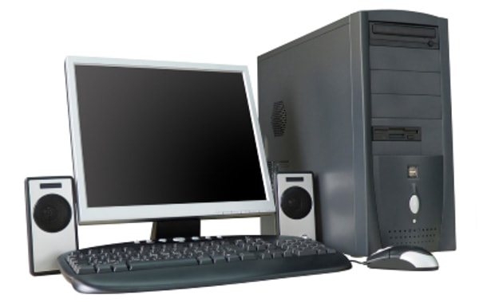
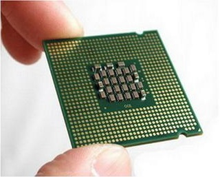
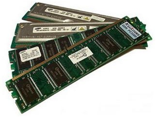
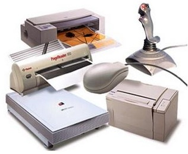
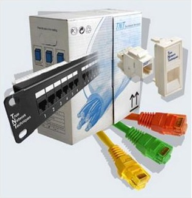

|
Компьютер - универсальное устройство
для хранения, обработки и передачи информации
|

|
|

|
роцессор - устройство, обеспечивающее
преобразование информации и управление другими устройствами компьютера
|
|
Оперативная память - устройство для хранения
программ и данных, которые обрабатываются
процессором в текущем сеансе работы.
При выключении компьютера вся информация,
находившаяся в оперативной памяти на момент
выключения, стирается
|

|

|
Устройства ввода информации - это аппаратные
средства для преобразования информации из формы,
понятной человеку в форму, воспринимаемую
компьютером
|
|
Устройства вывода - это аппаратные средства
для преобразования компьютерного представления
информации в форму, понятную человеку |

|

|
Устройства хранения информации (внешняя
память) - предназначены для долговременного
хранения информации любого вида. Выключение
компьютера не приводит к очистке внешней
памяти
|
|
Устройства для передачи информации преобразуют
компьютерные данные в сигналы, пригодные для
передачи по электрическим, оптическим и
телефонным линиям
|

|